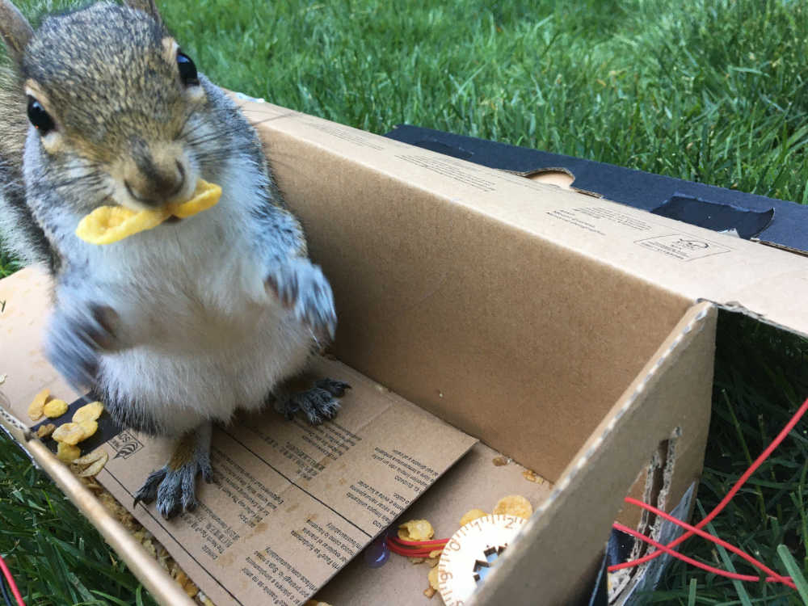
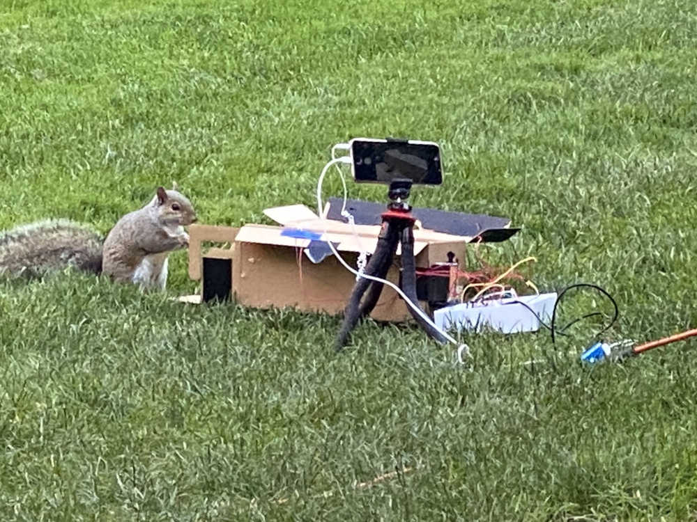

Squirrel Photo Booth
Completed: June 2020


Description:
Squirrels are fascinating creatures! Inspired by Mark Rober's squirrel obstacle courses, I wanted to make a similar device to interact with my cute, furry neighbors. This device is a pressure-activated camera system which snaps a photo when a weight is detected on the base. The cardboard base lies on top of a limit switch, so a small weight closes the circuit and is read by the microcontroller. An old iPhone is hooked up via the audio jack to take a photo when the sensor is activated. This project was completed during COVID, so there were lots of squirrels out and about, and I ended up getting some great shots!
List of materials:
- Arduino Leonardo
- Breadboard
- iPhone with headphone jack
- Phone tripod
- Selfie stick with button
- Limit switch
- Cardboard scraps
- Honey Bunches of Oats